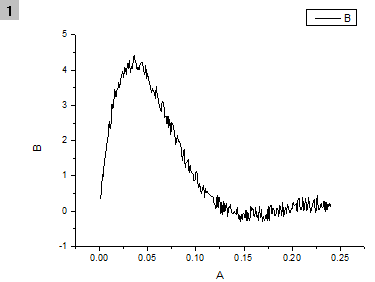
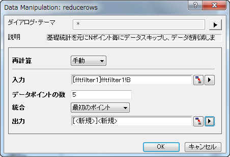
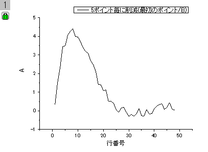

reducerows
概要
選択した列でNポイント分の統計値をNポイントごとに置き換える
追加の情報
必要なOriginのバージョン: Origin 8.1 SR0以降
コマンドラインでの使用法
reducerows npts:=3 method:=first
変数
| 表示名 |
変数名 |
I/Oとタイプ |
デフォルト値 |
説明 |
| 入力 |
irng |
入力
Range
|
<active>
|
入力データ範囲を指定します。 |
| ポイント数 |
npts |
入力
int
|
5
|
グループサイズnを指定します。入力範囲のn個のデータポインント毎に1つのデータポイントに統合します。 |
| 統合する方法 |
method |
入力
int
|
0
|
一連のデータポイントを統合する値を指定します。
オプションリスト
- first:最初のポイント
- N個のデータポイントをグループ内の最初の値で置き換えます。
- last:最後のポイント
- N個のデータポイントをグループ内の最後の値で置き換えます。
- ave:平均
- N個のデータポイントをグループ内の平均の値で置き換えます。
- min:最小
- N個のデータポイントをグループ内の最小の値で置き換えます。
- max:最大
- N個のデータポイントをグループ内の最大の値で置き換えます。
- sum:合計
- N個のデータポイントをグループ内の合計の値で置き換えます。
- sd:SD
- N個のデータポイントをグループ内の標準偏差の値で置き換えます。
|
| 出力 |
rd |
出力
ReportData
|
[<入力>]<新規>
|
出力範囲を指定します。 |
説明
reducerows XファンクションはN行ごとのデータをデータの記述統計値と置き換えます。
サンプル
次の例は、1度にいくつかのデータ行を削減する方法を示すものです。
- ファイル：インポート：単一ASCIIファイルと選択して<Origin フォルダ>\Samples\Signal Processingの中にある fftfilter1.dat ファイルをインポートします。
- 列Bを選択してメニューから作図：線図：折れ線を選択して、折れ線グラフを作成します。
- 
- ワークブックをアクティブにして、B(Y)列が選択されたままであることを確認します。コマンドウィンドウに reducerows -d と入力し、Xファンクションイアログボックスを開きます。
- データポイントの数を5にセットします。
- 統合ドロップダウンリストから最初のポイントを選択します。
- 出力として、[<新規>]<新規> をセットします。
- 
- OK ボタンをクリックします。結果は新しいワークシートに出力されます。
- 新しいワークシートのA列を選択し、作図: 線図: 折れ線とOriginメニューから操作して、グラフを作図します。
- 
他のサンプルについては、XFスクリプトダイアログ(F11を押す)をご覧下さい。
関連のXファンクション
stats, reducexy, reducedup